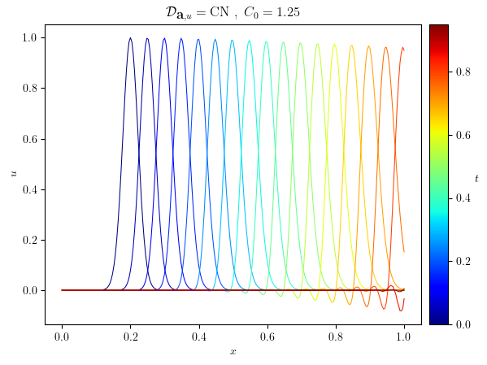
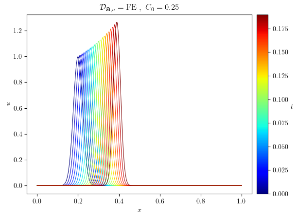
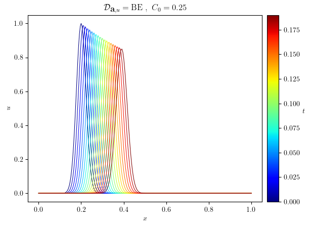
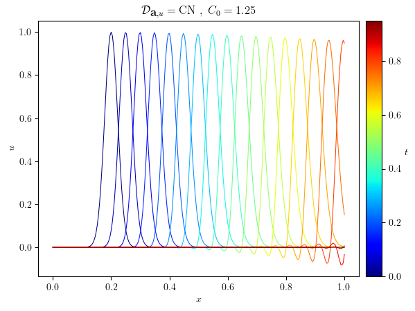
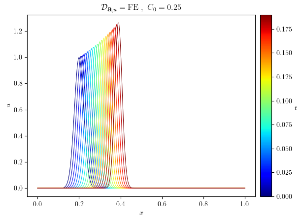
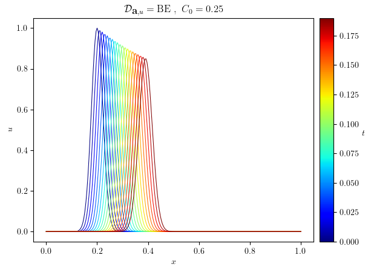
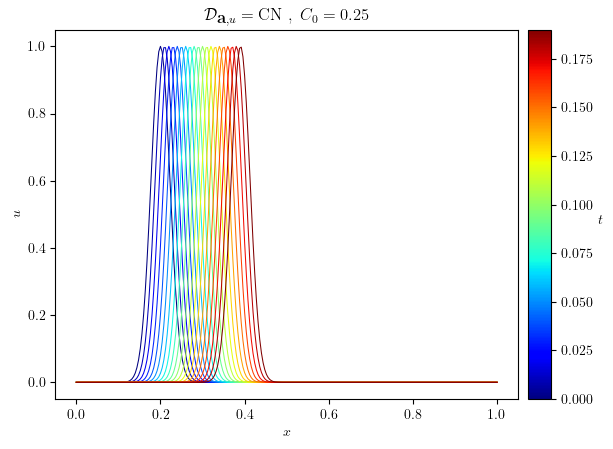
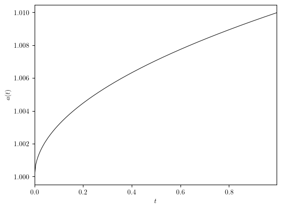
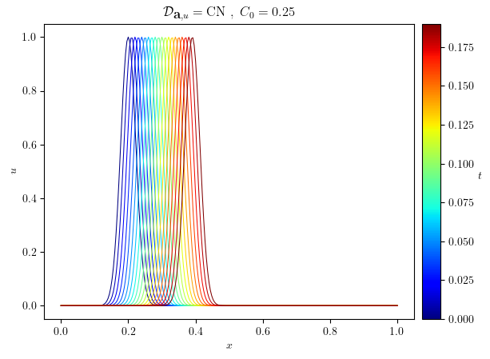
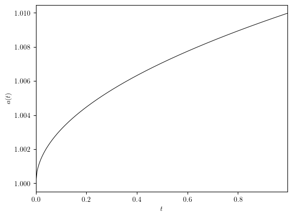

Advection of a Gaussian profile on an interval#
\[\begin{split}
\mathbb{S}
\begin{cases}
\Omega = [0, L_x] \\
u_0(x)=\exp\left(-\frac{(x - x_0)^2}{\sigma^2}\right) \\
u_{\text{I}}(x=0) = 1 \\
\textbf{a}(t)=(1 + \epsilon\sqrt{t})\textbf{e}_x \\
\end{cases}
\end{split}\]
import numpy as np
from lucifex.mesh import interval_mesh
from lucifex.fem import Constant
from lucifex.fdm import (
FiniteDifference, FiniteDifferenceArgwise, FunctionSeries, ConstantSeries,
BE, FE, CN, finite_difference_order, cfl_timestep,
)
from lucifex.solver import ibvp, evaluation , BoundaryConditions
from lucifex.sim import Simulation, run
from lucifex.viz import plot_line
from lucifex.io import write, get_ipynb_file_name
from lucifex.utils import nested_dict
from lucifex.pde.advection import advection
def velocity(
t: Constant | float,
eps: float,
) -> tuple[float]:
return (1.0 + eps * np.sqrt(float(t)), )
def create_simulation(
Lx: float,
Nx: int,
dt: float,
D_adv: FiniteDifference | FiniteDifferenceArgwise,
x0: float,
sigma: float,
eps: float,
) -> Simulation:
order = finite_difference_order(D_adv)
mesh = interval_mesh(Lx, Nx)
t = ConstantSeries(mesh, name='t', ics=0.0)
dt = Constant(mesh, dt, name='dt')
a = ConstantSeries(mesh, name='a', order=order, shape=(1,), store=1, ics=velocity(0.0, eps))
a_solver = evaluation(a, velocity, future=True)(t[1], eps)
u = FunctionSeries((mesh, 'P', 1), name='u', order=order, store=1)
u_ics = lambda x: np.exp(-(x[0] - x0)**2 / sigma**2)
u_bcs = BoundaryConditions(('dirichlet', lambda x: x[0], 0.0))
u_solver = ibvp(advection, u_ics, u_bcs)(u, dt, a, D_adv)
solvers = [a_solver, u_solver]
return Simulation(solvers, t, dt)
Lx = 1.0
Nx = 250
x0 = 0.2 * Lx
sigma = 0.001 ** 0.5
eps = 0.01
dt_opts = (0.005, 0.001)
D_adv_opts = (FE, BE, FE @ BE, CN)
simulations = nested_dict((float, FiniteDifference, Simulation))
for dt in dt_opts:
for D_adv in D_adv_opts:
simulations[dt][D_adv] = create_simulation(Lx, Nx, dt, D_adv, x0, sigma, eps)
t_stop = 1.0
n_stop = 200
for dt in dt_opts:
for D_adv in D_adv_opts:
run(simulations[dt][D_adv], n_stop, t_stop)
time_slice = slice(0, None, 10)
for dt in dt_opts:
h = Lx/ Nx
dt_courant_init = cfl_timestep(velocity(0.0, eps), h)
courant_init = dt / dt_courant_init
for D_adv in D_adv_opts:
u = simulations[dt][D_adv]['u']
legend_labels=(min(u.time_series[time_slice]), max(u.time_series[time_slice]))
title = f"$\mathcal{{D}}_{{\\textbf{{a}}, u}}=\\mathrm{{{str(D_adv)}}}~,~C_0={courant_init}$"
fig, ax = plot_line(
u.series[time_slice],
legend_labels, '$t$', cyc='jet', x_label='$x$', y_label='$u$', title=title)
write(fig, f'{get_ipynb_file_name()}_{D_adv}', './figures', close=False, pickle=False)
a = simulations[dt_opts[0]][D_adv_opts[0]]['a']
a_scalar = [i[0] for i in a.value_series]
plot_line((a.time_series, a_scalar), x_label='$t$', y_label=f'${a.name}(t)$')
(<Figure size 640x480 with 1 Axes>, <Axes: xlabel='$t$', ylabel='$a(t)$'>)

 





 



The Kernel crashed while executing code in the current cell or a previous cell.
Please review the code in the cell(s) to identify a possible cause of the failure.
Click <a href='https://aka.ms/vscodeJupyterKernelCrash'>here</a> for more info.
View Jupyter <a href='command:jupyter.viewOutput'>log</a> for further details.